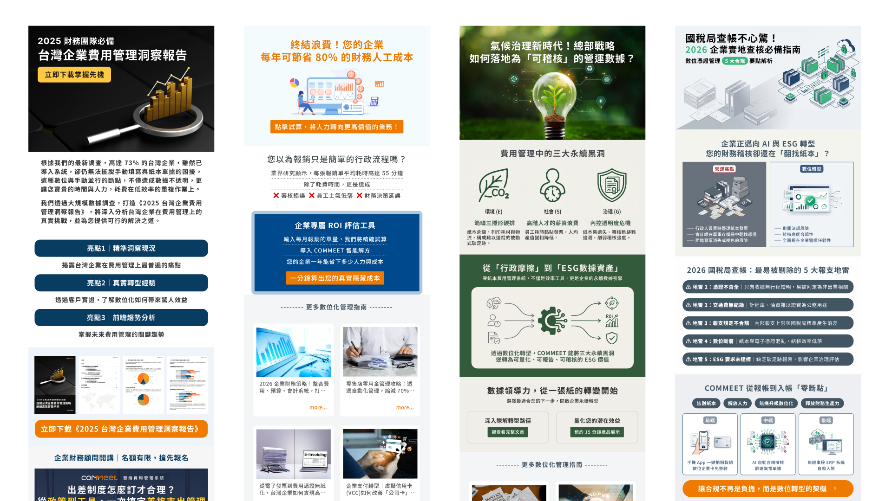

精選專案案例
展示「品牌視覺規範 ➔ 設計系統建構 ➔ 官網演進與行銷導流」的綜合執行力

品牌視覺識別與 Figma 設計系統建立
統籌制定品牌識別規範（Brand Guideline），並運用 Figma Auto Layout、Component 與 Variants 搭建完整的 Design System。涵蓋色彩系統、排版階層、按鈕多態、表單輸入框等元件，讓後續頁面擴充時能維持高一致性並大幅縮短交付時程。
Design System
Brand Guideline
Figma Variants

品牌官網從 0 到 1 建置與維護
我的做法： 完整參與品牌 2020 年至 2026 年的網站改版，自力完成從網站企劃到視覺設計到後端 Wordpress 上架，並結合 GA4 與 GTM、Big Query 等數據分析訪客動線與表單欄位，讓網站成為業務獲客的核心渠道。
官網改版
WordPress / 切版
GA4 轉換追蹤

Digital Campaigns · EDM · Information Graphics
行銷活動專案與多渠道數位素材延伸
我的做法： 依據核心賣點將專業報告與指南進行資訊圖表化編排；統一視覺風格並延伸至主題 EDM、電子報、社群圖文與廣告素材，確保品牌溝通的一致性與點擊吸引力。
主題 EDM
資訊視覺化
Campaign 素材